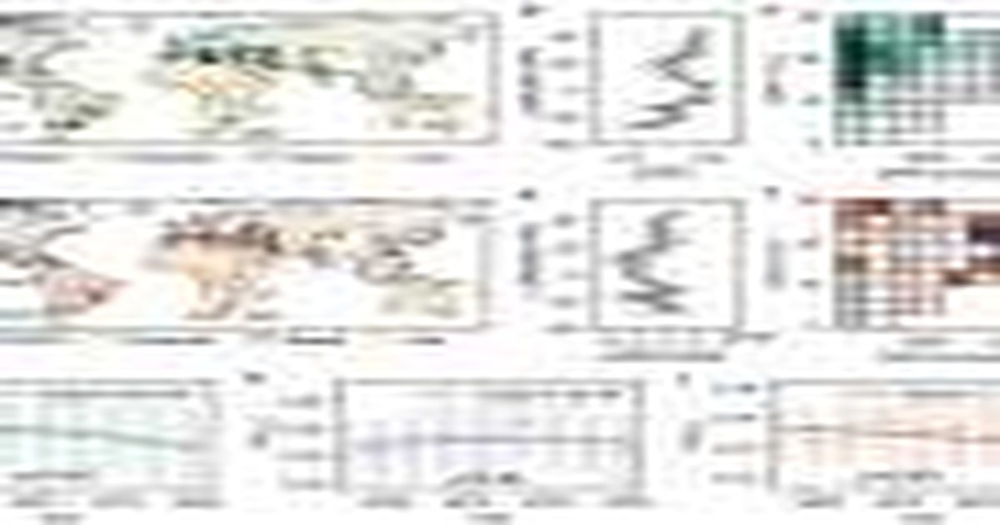

Глобальные спутниковые данные свидетельствуют о расширении разрыва в восстановлении между городской и сельской растительностью
Глобальное исследование выявило поразительное расхождение в том, как городская и сельская растительность реагируют на климатический стресс.
Исследование проводилось под руководством Цзинь Ву из Школы биологических наук факультета естественных наук и профессора Юй Чжоу с кафедры географии факультета социальных наук Гонконгского университета (HKU) с доктором Чжэнфэй Го в качестве первого автора.